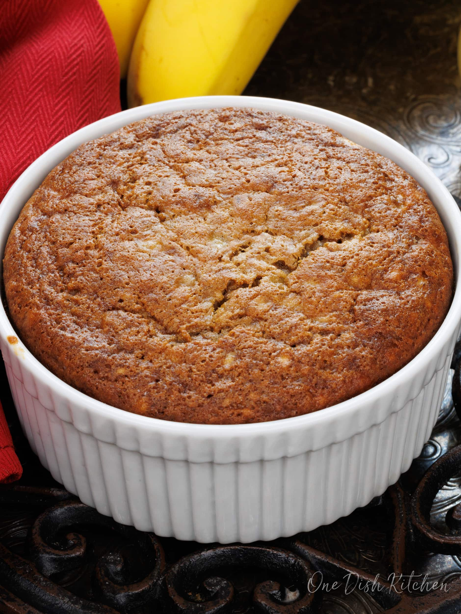

Banana Bread

Source
Description
Homemade banana bread made with one banana and a few pantry staples. This easy banana bread recipe is the perfect size for one person.
When you've got just one banana sitting on your counter, you've got the perfect amount to make banana bread for one! That's right,
you can make this banana bread with one banana and a few pantry staples.
Ingredients
- ¼ cup all-purpose flour
- ¼ teaspoon baking soda
- ¼ teaspoon ground cinnamon
- ⅛ teaspoon salt
- 1 medium banana, mashed
- 2 tablespoons sugar
- 1 tablespoon salted butter, melted (plus more for greasing the ramekin)
- 1 large egg yolk
- ½ teaspoon vanilla extract
Steps
- Heat the oven to 350°F (177°C) and lightly grease a 10-ounce ramekin. In a small bowl, combine flour, baking soda, cinnamon,
and salt together. Set aside.
- Mash the banana with a fork and add to a medium-sized bowl.
Add the sugar and with an electric mixer or a wire whisk whip the banana and sugar together.
- Add the melted butter, the egg yolk, and the vanilla; mix well.
- Add the dry ingredients and mix until combined.
- Pour into the ramekin and bake for 25-30 minutes until golden brown.
- Remove from the oven and cool slightly before eating.